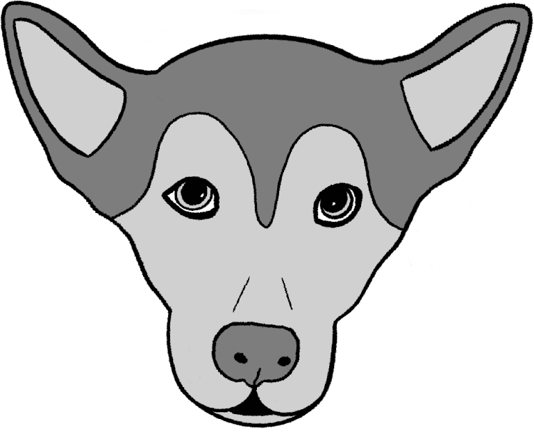

Stop Parvo Springfield MO

The Street Puppy:
He was born on the cold concrete,
but he was alive and full of love to give.
He thought of his human as another human who helped clean him up and placed him with his mother for milk. Puppies are easy when they are small, and they can stay with their mom, but that changes quickly, as life on the street is not a safe place for puppies who want to grow big and strong, plus he needed a human of his own. His human was not much, but she was his human, and she wanted him to be healthy. His human knew that if she put him on the wrong ground, he could get parvo or other viruses and die. So she took him to the outreach clinic where he could get his shots and boosters. The clinic also helped her find resources. After a while, the puppy, now a dog, and his human live in a home with a huge backyard.
Program Statement:
Stop Parvo Springfield Missouri is dedicated to protecting dogs in our unsheltered and extremely low-income communities by providing access to essential care and supplies. This includes but is not limited to vaccinations, nutritious food, and critical gear. Our mission is to prevent the spread of deadly preventable illnesses. Every dog deserves a healthy life regardless of their owner's financial situation.